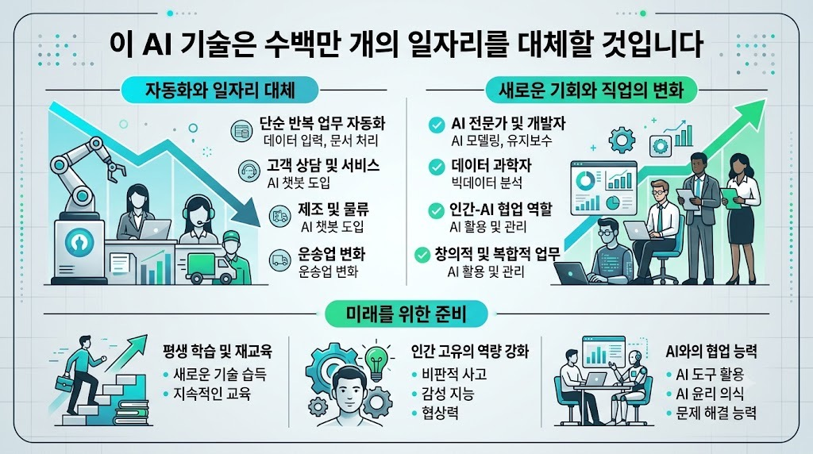

Nate HerkMORNING DIGEST · 2026-07-27 · Nate Herk | AI Automation🎬 영상
This AI Technology Will Replace Millions (Here's How to Prepare)

01핵심 개요
항목
내용
채널
Nate Herk \
AI Automation
제목
This AI Technology Will Replace Millions (Here's How to Prepare)
길이
약 14분(843초)
핵심결론 1
일자리를 대체하는 주체는 로봇이 아니라 'AI를 쓰는 옆자리 동료'이며, 그가 두 사람 몫을 처리하기 시작하면 회사는 둘 다 고용할 이유가 없어진다는 빅테크 CEO 발언을 인용해 설명한다
핵심결론 2
코딩을 몰라도 되며 유일하게 배워야 할 기술은 '에이전트형 AI를 관리하는 역량(AI 매니저)', 즉 신입사원을 온보딩하듯 목표·좋은 결과·나쁜 결과·피해야 할 것을 알려주고 결과를 검토·피드백하는 능력이다
핵심결론 3
클로드 코드로 유튜브 2분기(75편) 분석 엑셀은 약 10분, 청소업 관리 앱은 수 분, 리드 50건 발굴·보강·개인화 아웃리치 작성은 약 20분 만에 비개발자가 자연어만으로 완성한 실사례를 제시한다
02핵심 내용 구조
1) 대체의 실체 — 로봇이 아니라 'AI를 쓰는 사람'
화자는 "AI 때문에 일자리를 잃는 게 아니라, AI를 사용하는 사람 때문에 일자리를 잃는다. 회사가 망하는 것도 AI 때문이 아니라 AI를 쓴 다른 회사 때문"이라는 대형 IT 기업 CEO의 발언을 인용한다.
옆자리 동료가 AI 사용법을 익혀 자신의 업무와 동료의 업무를 동시에 처리하기 시작하면, 회사 입장에서는 두 사람을 모두 고용할 필요가 없어지는 구조로 일자리 감소를 설명한다.
2) 지금이 변곡점인 이유 — 에이전틱 AI의 등장
기존 자동화 시스템은 사용자가 지시한 단계만 정확히 수행했고, 오류가 발생하면 사람이 직접 고쳐야 했다.
반면 '에이전틱(agentic)' AI는 원하는 결과(목표)만 알려주면 필요한 단계를 스스로 설계하고 실행한다는 점에서 근본적으로 다르다.
책상에 앉아 하루 종일 처리하는 유형의 사무 업무가 에이전트의 주요 대체 대상이며, 이 흐름은 막을 수 없으므로 "이길 수 없다면 합류하라"는 태도를 권한다.
3) 실사례 1 — 유튜브 2분기 분석 엑셀 (클로드 코드, 약 10분)
'/goal' 슬래시 명령으로 조건이 충족될 때까지 클로드가 스스로 계속 작업하도록 설정하고, 2026년 2분기에 업로드한 영상 75편 전체의 조회수·댓글·클릭률(CTR) 등 통계를 분석해 개선점을 도출하도록 지시했다.
클로드는 youtubechannel.md 파일을 읽어 목표를 파악하고, 파이썬 스크립트로 유튜브 채널 데이터를 직접 가져와 '추론→실행'을 반복했다.
결과물은 임원 대시보드·비디오 스코어카드·콘텐츠 필러(클로드 코드/에이전틱, 음성 AI, 판매 등 카테고리)·월별 추세를 담은 엑셀 시트로, 완성 후 스크린샷을 찍어 색상·간격 등을 자체 검증했다. 단, 노출수와 CTR 데이터는 누락되어 복구하지 못했다는 한계도 그대로 노출했다.
화자는 이 작업을 사람이 수동으로 하면 데이터 추출·입력·정리·분석까지 최소 반나절이 걸린다고 추정했다.
4) 실사례 2 — 청소업 관리 앱 (수 분)
가상의 소규모 청소 사업을 가정해 작업 추적과 수금 관리를 할 수 있는 앱을 요청했고, 클로드는 HTML 앱을 생성했다.
앱에는 오늘 날짜, 이번 달 수입, 미수금 현황이 표시되며, 특정 고객의 결제를 '완료'로 표시하거나 취소된 예약을 삭제하는 기능, 새 작업을 추가하는 기능이 포함됐다.
새로고침해도 이전 작업 내역이 저장되는 메모리 기능을 추가로 요청해 반영했으며, 색상 변경이나 기능 추가, 실제 웹 URL·iOS 앱·데스크톱 앱으로의 전환도 자연어 지시만으로 가능하다고 설명했다.
5) 실사례 3 — 리드 50건 발굴·보강·개인화 아웃리치 (약 20분)
Clay를 활용해 화자의 타깃 고객(아바타)과 정확히 일치하는 리드 50건을 찾고, 각 리드의 사업 내용·페인포인트·구글 리뷰 등으로 정보를 보강(enrich)하도록 요청했다.
결과 엑셀에는 사업 분야, 의사결정자, 직책, 이메일(및 인증 여부), 전화번호, 웹사이트, 위치, 구글 평점, 리뷰 수, 사업상 문제점, 최근 신호, 개인화 요소, 이메일 제목·본문 등의 열이 포함된 50행 데이터가 생성됐다.
예시로 소개된 이메일은 "41,000개 리뷰에서 평점 4.7점을 받은 업체인데 콜백 미회신 리뷰가 있었다"는 구체적 근거를 짚고 "30일 무료 체험, 예약 미발생 시 비용 없음" 조건을 제시하는 방식으로 개인화됐다.
6) 클로드 코드 vs 클로드 챗의 차이
클로드 챗은 대화형 인터페이스로 클레이 등과 연동해 리드를 찾을 수는 있지만, 클로드 코드는 로컬 폴더·파일에 직접 접근해 화자의 이메일·소통 내역·회의록·유튜브 구독자·커뮤니티·자격증 프로그램·팀 정보 등 사업 전반을 파악하고 있다는 점에서 차별화된다.
화자는 이를 "가상비서(VA)를 고용한 것"이 아니라 "공동창업자를 둔 것" 같은 느낌이라고 표현한다.
7) 익혀야 할 단 하나의 기술 — 'AI 매니저' 마인드셋
더 이상 엔지니어나 오퍼레이터가 아니라 매니저처럼 AI를 대해야 한다는 것이 화자의 핵심 주장이다.
신입사원을 온보딩하듯 회사와 역할을 알려주고, 처음부터 모든 걸 맡기지 않고 단계적으로 위임하며, 결과를 무비판적으로 수용하지 않고 검토·피드백해 개선시키는 과정이 필요하다고 강조한다.
8) 3단계 온보딩 실행 플랜
1단계(대화 시작): 클로드 코드를 열고 목표, 좋은 결과와 나쁜 결과의 기준, 피해야 할 것을 설명하고 작은 일부터 연습시키며 자신의 업무 방식을 학습시킨다.
2단계(실제 반복 업무 하나 맡기기): 업무든 개인 용무(운동 스케줄, 식단, 장보기 목록)든 실제로 반복하는 일 하나를 골라 맡기고, 결과가 돌아오면 그대로 받지 말고 수정 지시를 반복해 실사용 가능한 수준까지 끌어올려 신뢰를 구축한다.
3단계(도구 연결과 성과 측정): 익숙해지면 더 큰 작업을 묶고 Gmail·Slack·캘린더 등 상시 도구와 연결하되, 클로드가 작업 전 허락을 구하도록 권한을 안전하게 통제하고, "이번 주 3시간 절약" "월 신규 고객 100명" 같은 구체적 목표를 세워 전후 데이터를 기록해 개선한다.
03기술적 맥락
에이전틱 AI(Agentic AI): 질문에 답만 하는 것이 아니라 목표를 향해 스스로 도구를 호출하고 파일을 조작하며 행동하는 AI로, '추론(reasoning) → 실행(action) → 추론 → 실행'의 순환 구조를 반복해 목표 달성 여부를 스스로 검증한다.
클로드 코드(Claude Code): 클로드 챗과 달리 로컬 폴더·파일 시스템에 직접 접근해 문서·엑셀·이메일·회의록 등을 읽고 쓰고 정리할 수 있는 인터페이스로, 영상 속 화자는 이를 'AI 운영체제(Herc 2 프로젝트)'의 엔진으로 사용한다.
슬래시(/) goal 명령: 목표 조건을 지정하면 그 조건이 충족될 때까지 에이전트가 자율적으로 작업을 반복하도록 지시하는 명령 패턴으로, 영상의 세 가지 실사례 모두 이 방식으로 시작됐다.
Clay: 리드 발굴과 데이터 보강(enrichment)에 사용된 외부 도구로, 클로드 코드와 연동해 잠재 고객 정보를 자동으로 채워 넣는 데 활용됐다.
04전략적 의미
위협의 본질은 기술 자체의 격차가 아니라 'AI 활용 격차'이며, 비개발자도 매니저 역량만 갖추면 동료 대비 생산성을 큰 폭으로 끌어올려 상대적 우위를 확보할 수 있다.
실제 업무에 적용해 투자 대비 효과(ROI)를 빠르게 체감하는 것이 지속 사용으로 이어지는 핵심이며, 데모만 구경하는 것과는 근본적으로 다른 결과를 낳는다.
Gmail·Slack·캘린더 같은 상시 도구와의 연결, 그리고 작업 전 허락을 구하는 권한 통제 체계가 함께 갖춰져야 자동화를 안전하게 확장할 수 있다.
05핵심 워크플로우·방법론
'/goal' 슬래시 명령으로 목표·완료 조건을 지정 → 클로드가 관련 파일(예: youtubechannel.md)을 읽고 계획 수립 → 파이썬 스크립트 등으로 데이터 수집 → 추론·실행 반복 → 결과물(엑셀/HTML) 생성 후 스크린샷 등으로 자체 검증하는 흐름이 세 실사례에 공통 적용됐다.
3단계 AI 온보딩 플랜(대화 시작 → 반복 업무 하나 위임 → 도구 연결 및 성과 측정)은 비개발자가 에이전틱 AI 도입을 시작할 때 따라 할 수 있는 구체적 절차로 제시된다.
06활용 시나리오
비개발 직군 직장인이 리포트 작성, 데이터 정리, 아웃리치 등 반복 업무 중 하나를 골라 클로드 코드로 자동화해 시간 절약을 체감하는 첫 단계로 삼을 수 있다.
1인 사업자나 소상공인이 청소업 관리 앱 사례처럼 자연어 지시만으로 자체 업무관리 툴을 만들어 초기 운영 비용을 절감하는 데 참고할 수 있다.
팀 리더나 관리자가 구성원 교육 시 '3단계 온보딩 플랜'을 AI 도입 프레임워크로 활용할 수 있다.
영업·마케팅 담당자가 리드 발굴·보강·개인화 아웃리치 사례를 참고해 콜드 이메일 워크플로우를 자동화하는 데 응용할 수 있다.
07현황 및 전망
에이전틱 AI가 사무 업무를 빠르게 대체하는 동시에 새로운 기회도 함께 창출하고 있으며, 이 변화는 주 단위로 가속화되고 있다고 화자는 진단한다.
화자는 AI 활용 역량 격차가 향후 커리어 경쟁력을 가르는 핵심 변수가 될 것으로 전망하며, 무료 교육 커뮤니티와 'AI 운영체제 구축' 강좌를 진입점으로 제시한다.
성과를 감(느낌)이 아니라 데이터(절약 시간, 신규 고객 수 등)로 추적·기록하는 습관이 지속적 개선의 전제 조건으로 강조된다.